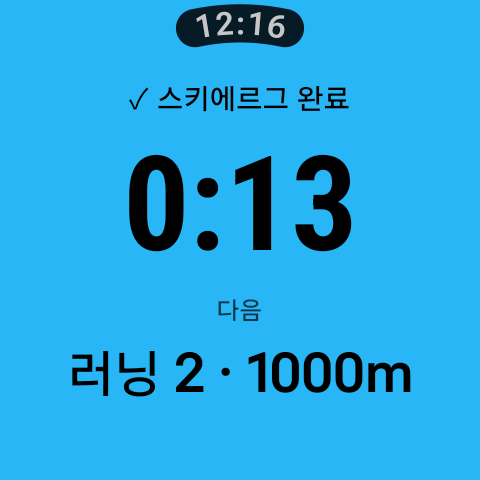
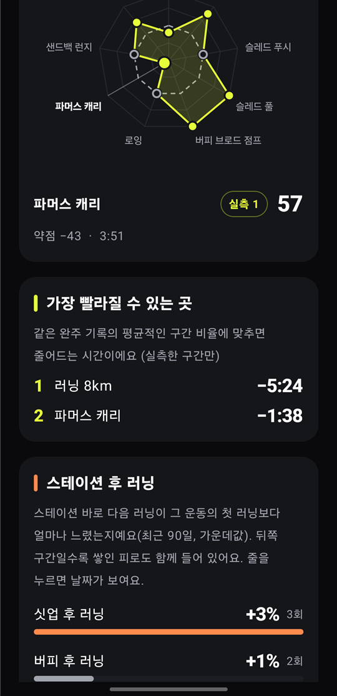

설치와 권한
- 폰에 WatchSplit을 설치하고, 같은 Google 계정의 워치에도 설치해요. 폰 Play 스토어에서 워치에 설치할 수 있어요.
- 필요한 기기: 안드로이드 10 이상 폰, Wear OS 3 이상 워치. 실제 확인은 갤럭시워치7과 갤럭시 S25로 했어요.
- 처음 시작할 때 워치가 권한을 물어봐요.
권한 쓰는 곳 심박 구간별 평균·최고 심박, 심박 존 신체 활동 실내 러닝 거리(걸음 수 기반) 위치 야외를 처음 고를 때만 물어요. 야외 러닝 거리(GPS)에 운동 중에만 쓰고 경로는 저장하지 않아요 알림 운동 중 시계 화면의 운동 아이콘 - Health Connect 연결은 선택이에요. 폰 앱 설정에서 켜면 운동이 다른 건강 앱에도 보여요.
대회 형식 시뮬레이션
- 워치에서 대회 시뮬레이션을 눌러요.
- 부문을 골라요: Open·Pro, 여자·남자, 혼성.
- 싱글(혼자 전부) 또는 더블(러닝은 함께, 스테이션은 나눠서)을 골라요.
- 준비 화면에서 실내·야외와 대결 상대(없음, 내 최고, 최근 기록, 받은 도전장의 친구, 목표 페이서)를 고르고 시작.
부문별 거리와 무게는 공개된 대회 규정을 바탕으로 넣었어요.

구간 넘기기
- 워치 아래 버튼을 한 번 누르면 다음 구간으로 넘어가요. 땀에 젖은 손가락으로도 확실히 눌려요.
- 화면을 길게 누르면 메뉴가 나와요: 계속하기, 일시정지, 구간 되돌리기, 운동 종료(한 번 더 누르면 종료).
- 예전처럼 화면을 길게 눌러 넘기고 싶으면 워치 설정 → 구간 전환에서 바꿀 수 있어요. 이때는 아래 버튼이 메뉴예요.
- 진동이 오면 넘어간 거예요. 넘어가는 순간 방금 구간 시간과 다음 구간이 크게 보여요.
- 넘기고 3초 안에 다시 누른 건 실수로 보고 무시해요.

실내 러닝 거리 맞추기
실내(러닝머신, 대회장)에서는 GPS 대신 걸음 수로 거리를 재요. 보폭은 사람마다 달라서 실제보다 짧거나 길게 나올 수 있어요.
- 워치 설정 → 📏 러닝머신 보정 달리기를 열고 거리(400m 또는 1000m)를 골라요.
- 러닝머신을 평소 페이스로 맞추고, 출발과 함께 시작.
- 러닝머신이 그 거리가 되는 순간 러닝머신 400m 도착을 누르고, 이 값으로 저장.
보정은 오차를 줄이는 방법이에요. 평소와 속도가 많이 다르면 다시 차이가 날 수 있어요. 대회 페이스로 보정하는 게 좋아요.
그래서 실내 러닝 중에는 정확한 구간 시간을 크게, 걸음으로 잰 페이스와 거리는 작게 "추정"으로 보여 줘요. 목표가 있으면 "목표까지 0:18"처럼 남은 시간을 알려 줘요. 구간이 끝나면 정해진 거리로 계산한 정확한 페이스가 나와요. 실내에서는 페이스가 빠르다·느리다는 진동도 울리지 않아요(걸음 거리로는 틀리게 울려서요).
실제 대회 기록은 폰의 기록에서 실전 대회 기록을 켜 두세요. 실전 표시가 붙고 예상 기록 계산에서 빠져요. 대회장 러닝 한 구간의 실제 거리를 알면 넣어 두세요. 그 거리로 구간 페이스를 다시 계산해요.
운동 중 진동과 목표 페이서
러닝 중에는 목표(프로그램의 목표 기록이나 대결 상대)와 비교해 진동으로 알려 줘요. 준비 화면에서 🎯 목표 페이서(프로)를 고르면, 원하는 목표 기록으로 대결할 수 있어요.
| 진동 | 뜻 |
|---|---|
| 짧게 4번 | 목표·상대보다 10초 이상 늦어요 |
| 길게 1번 | 목표·상대보다 10초 이상 빨라요 |
| 길게 2번 | 이번 러닝 구간의 거리에 닿았어요 |
| 짧게 3번 | 시간으로 정한 구간이 끝났어요 |
나와 대결, 친구 도전장
- 내 최고와 대결: 준비 화면에서 대결 상대로 고르면, 구간마다 내 최고 기록보다 앞서는지 뒤지는지 보여 줘요. 대회 시뮬레이션에서는 무료, 훈련·내 프로그램과 최근 기록과 대결은 프로예요.
- 도전장 보내기: 폰의 기록 상세 → 오른쪽 위 ⋮ → 도전장 보내기. 카카오톡 등으로 코드가 담긴 메시지를 보내요.
- 도전장 받기: 받은 메시지를 길게 눌러 공유 → WatchSplit을 고르면 가장 정확해요. 복사해서 붙여 넣으면 코드가 잘릴 수 있어요.
- 받은 도전장은 워치로 넘어가서, 친구의 구간 기록과 대결할 수 있어요. 가입이나 서버가 필요 없어요.
내 프로그램, 직접 입력
- 내 프로그램: 폰의 프로그램 탭에서 러닝·스테이션 구간을 만들어 워치로 보내요. 무료는 3개, 프로는 무제한이에요.
- 직접 입력: 워치 없이 한 운동은 폰의 기록 탭 → + 직접 입력. 시간은 숫자만 써도 돼요(312 → 3:12).
기록 분석
- 대회 예상 기록: 최근 러닝 페이스와 스테이션 기록으로 완주 시간을 추정해요. 실제 대회 기록을 보장하지는 않아요.
- 스테이션 밸런스: 같은 완주 기록대의 평균과 비교한 스테이션별 강점과 약점.
- 스테이션 후 러닝: 스테이션 바로 다음 러닝이 첫 러닝보다 얼마나 느려지는지.
- 심박 존, 힘든 정도(RPE), 메모: 기록 상세에서 볼 수 있어요. 존별 시간은 프로예요.
- 무료 버전에서는 집중 훈련 구간과 스테이션 후 러닝을 1줄씩 보여 주고, 나머지는 프로에서 열려요.

백업, Strava, Health Connect
- 백업·복원: 폰 설정에서 모든 기록(메모·RPE 포함), 내 프로그램, 받은 도전장, 대회 날짜, 달력에 넣은 다른 운동을 파일로 저장해요. 구글 드라이브에 저장해 두면 폰을 바꿔도 되살릴 수 있어요.
- Strava: 기록 상세 → ⋮ → Strava용 파일 (TCX)로 저장한 뒤 strava.com → 업로드에서 올리면 구간(랩)과 심박이 함께 들어가요.
- Health Connect: 연결해 두면 운동이 자동으로 저장돼요. 폰에서 기록을 지우면 Health Connect에서도 지워져요.